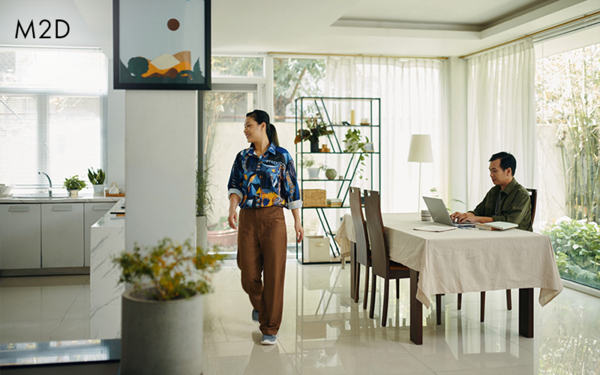
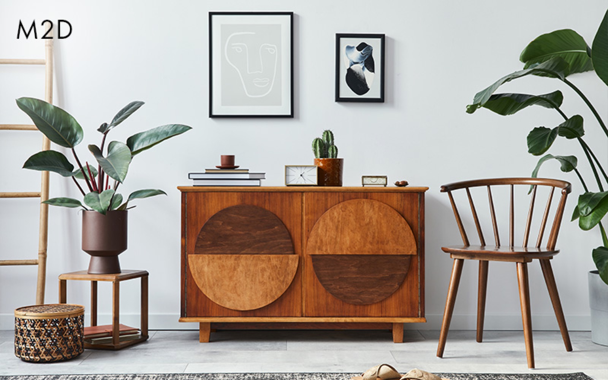

Key Takeaways
Open floor plans enhance the flow of light and air, offering a more spacious and connected living experience.
They encourage flexible layouts that suit entertaining, family life, or multifunctional living.
However, the lack of walls means noise, clutter, and privacy must be managed with thoughtful interior design solutions.

The open floor plan is a hallmark of modern home design, popular across many Singaporean homes, from BTO flats to larger resale HDB units. By removing unnecessary walls and barriers between spaces such as the living room, dining area, and kitchen, this layout creates a seamless flow that feels bright, airy, and inclusive.
For many homeowners, especially those moving into a newly acquired resale HDB flat, this approach is an opportunity to maximise space and flexibility. However, as with any trend, there are both advantages and drawbacks. An open concept may look fantastic on paper, but does it fit your lifestyle and household habits?
In this article, we examine the main pros and cons of the open floor plan, and share design tips to help you make the most of it in your next HDB home renovation.
Pros of an Open Floor Plan

1. Better Flow of Light and Air
One of the most appealing aspects of an open floor plan is how it improves the flow of light and air throughout your flat. With fewer walls, natural light from windows and balcony doors can travel further, making even smaller HDB units feel more spacious and inviting.
In Singapore’s tropical climate, proper airflow is also essential. An open layout allows breezes from ceiling fans or windows to circulate more freely, which can improve comfort and reduce your reliance on air-conditioning.
2. Improved Social Interaction
Whether you are entertaining friends or keeping an eye on children while preparing dinner, open layouts build better communication and connection. It eliminates the isolation that often comes with closed kitchens or boxed-in living rooms.
Families living in resale HDB flats often find that an open layout helps bring everyone into a shared space more naturally. It makes conversations flow more easily and turns daily routines into shared experiences.
3. Flexible Layouts
Without walls dictating the shape and function of each space, you have the freedom to experiment with flexible layouts. Your dining area can double up as a workspace; your living room can expand or contract depending on furniture placement or guest count.
This is especially useful in Singaporean homes, where space is a premium and each square metre is precious. From foldable dining tables to modular sofas, open layouts give you the creative freedom to adapt as your needs change.
Cons of an Open Floor Plan
1. Less Privacy
The openness that makes this layout so desirable can also be a drawback. Without walls to separate rooms, private corners are harder to come by. This can be challenging in multi-generational households or for individuals who work from home.
A key consideration in HDB interior design is finding that balance between openness and seclusion. If your household includes students, remote workers, or elderly family members, a fully open layout may require some compromise.
2. Noise Carries More Easily
In open-concept homes, noise tends to travel farther. Kitchen sounds, television noise, or conversations can be disruptive when there are no walls to contain them. This is particularly noticeable in smaller HDB flats where zones are close together.
Acoustic treatments such as curtains, rugs, or soft furnishings can help absorb sound, but it is worth planning ahead if your lifestyle requires more quiet zones.
3. Clutter Is More Visible
With everything in plain view, clutter stands out much more in an open floor plan. Dishes in the sink, schoolbooks on the dining table, or a messy coffee table can quickly make the entire space feel chaotic.
Maintaining tidiness becomes essential. Incorporating clever storage solutions and dedicating zones for everyday activities can help you keep things under control.
Design Tips: Zoning Without Walls

One of the most important strategies for managing these open-concept layouts is to define zones clearly using non-structural elements:
Use area rugs to separate the living and dining areas.
Choose lighting that distinguishes each zone, such as pendants over the dining table and downlights in the living area.
Use furniture to create flow, like a sofa that acts as a soft divider between spaces.
These design techniques ensure that each area still feels distinct even without physical walls.
An open floor plan offers many benefits, including improved ventilation and light dispersion, as well as enhanced social interaction. However, it also comes with trade-offs, such as lesser privacy, more visible clutter, and the challenge of controlling noise levels.
If you are considering adapting this layout, be it for your BTO or resale HDB interior design, it is important to weigh these pros and cons against how your household functions day to day.
Here at M2D Design and Consultancy, we take pride in creating interiors that are not only beautiful, but practical for Singapore living. Whether you prefer open concepts or more defined layouts, our team provides tailored solutions that fit your space, style, and needs.
For more information about our services, please contact us today.